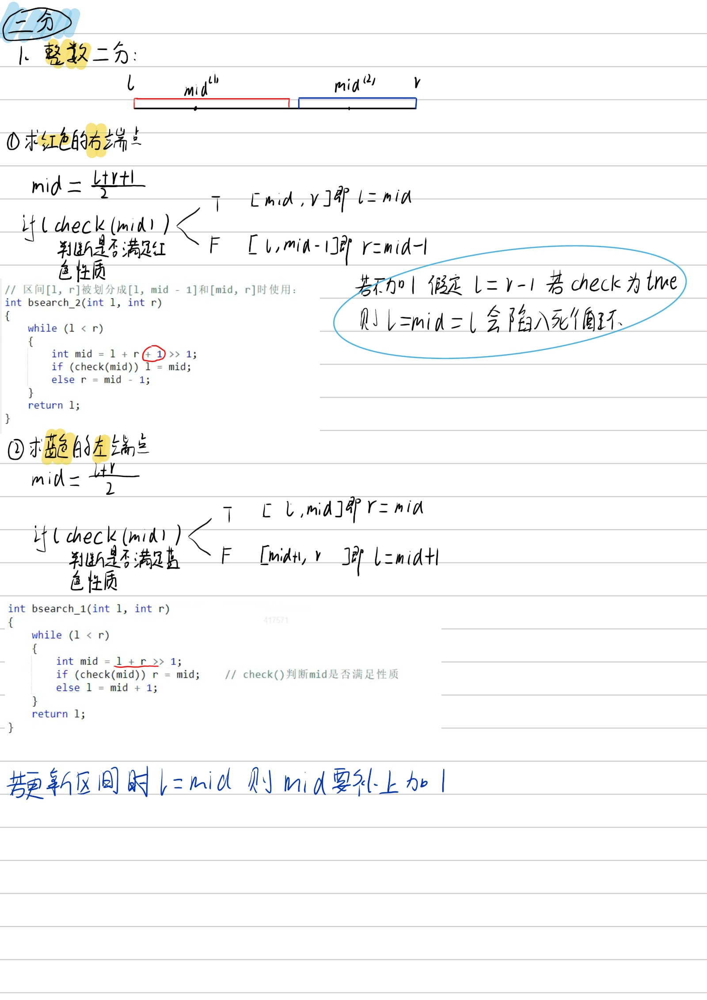
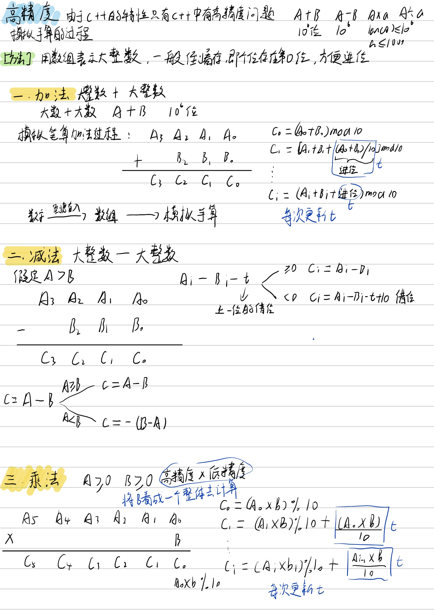
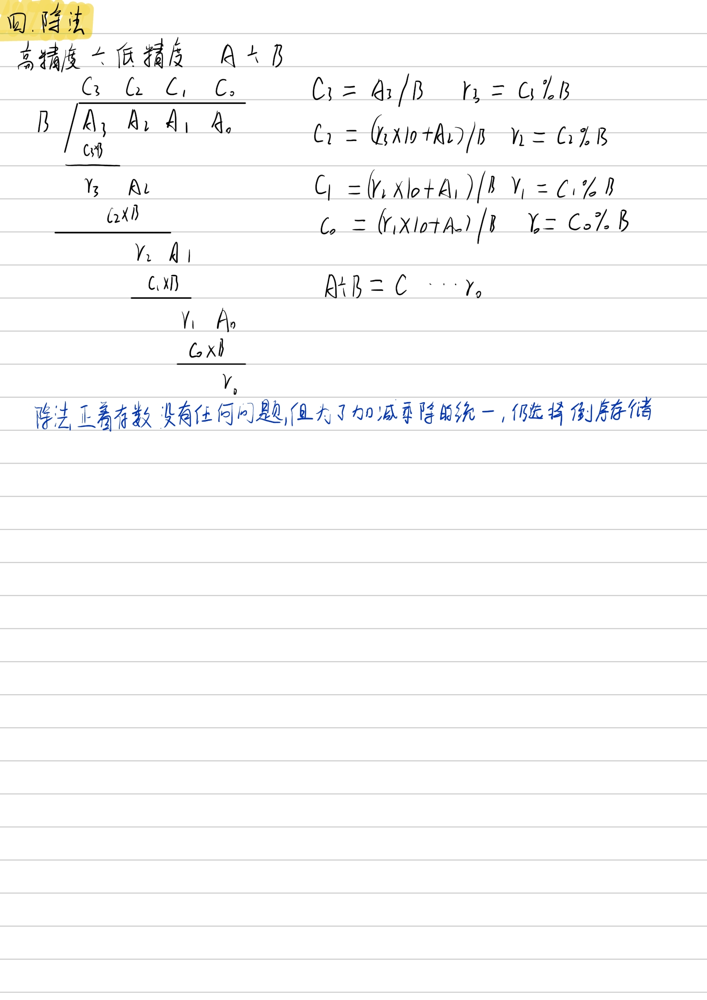
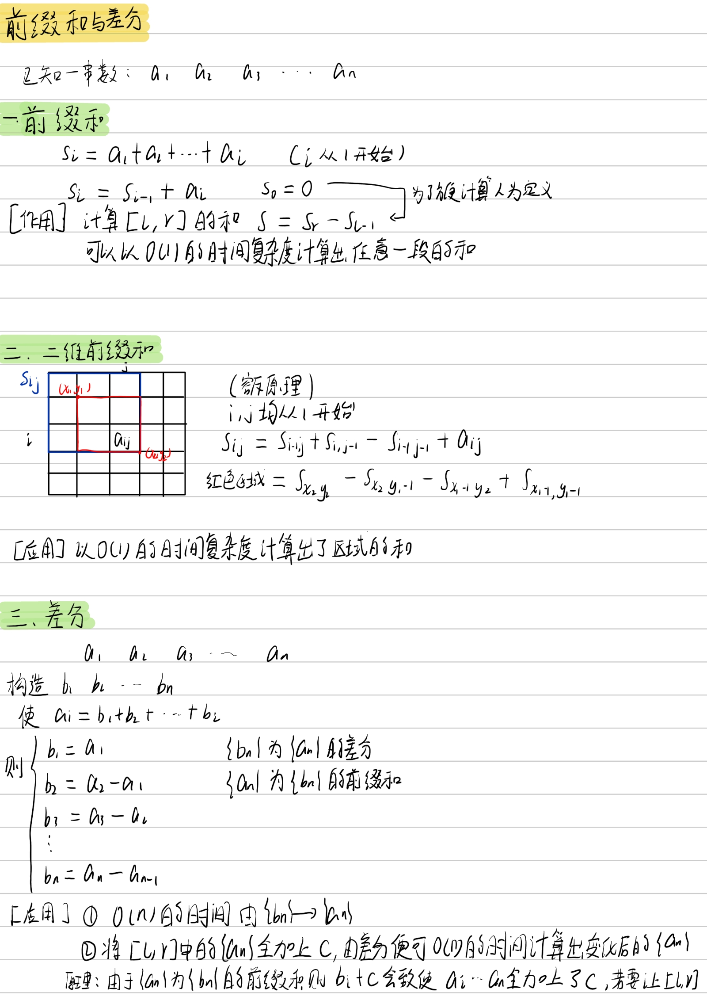
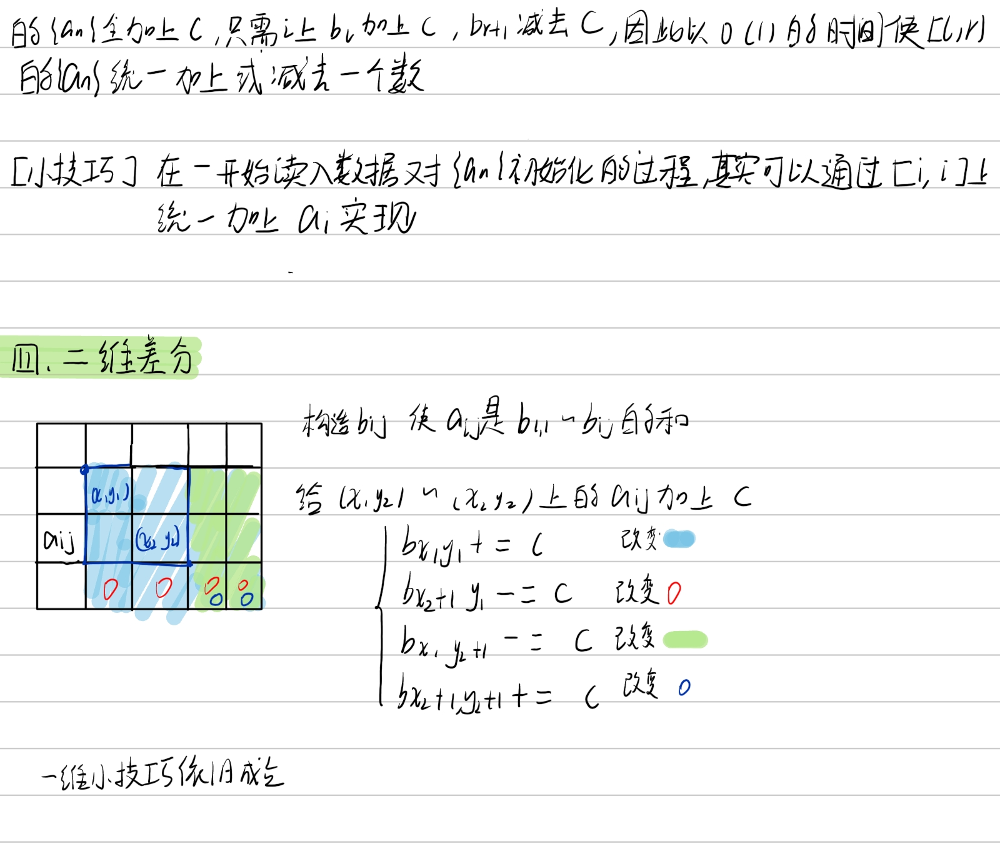
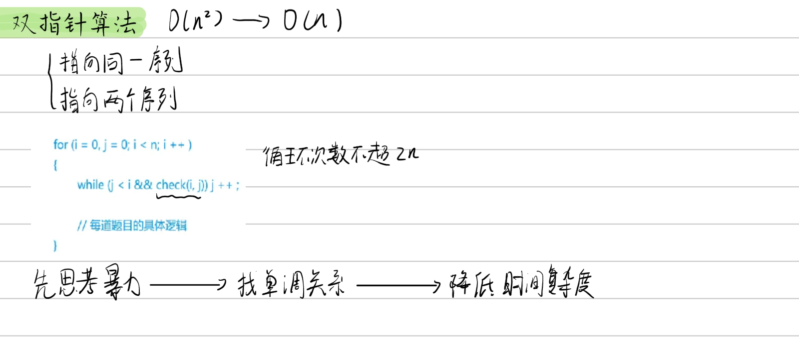
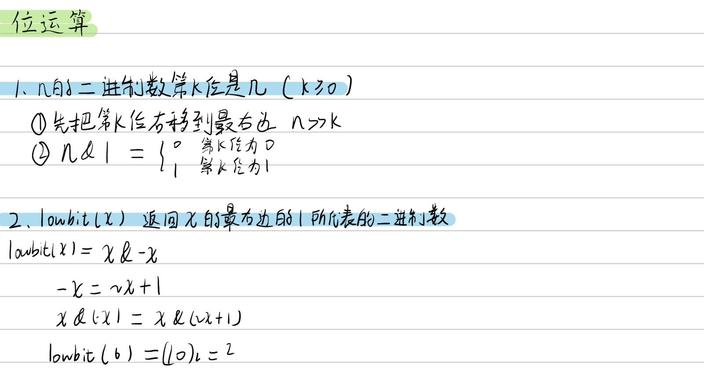
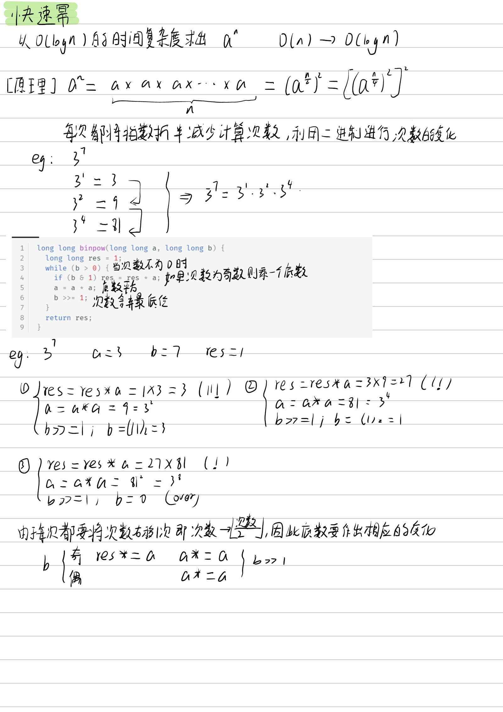
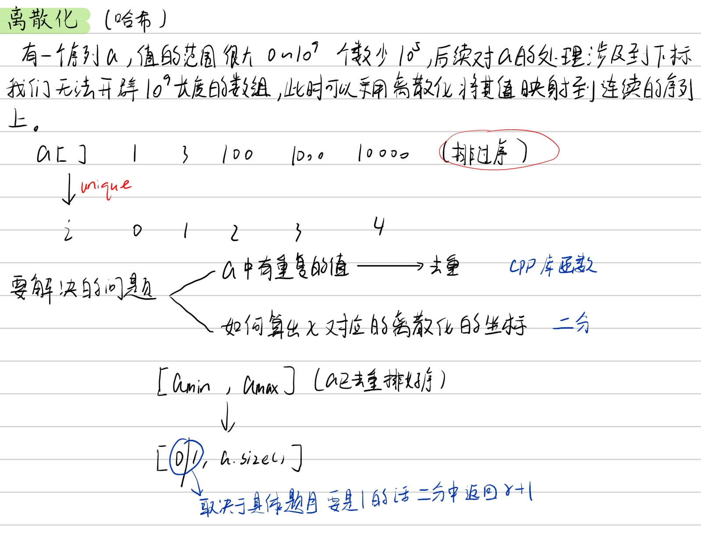
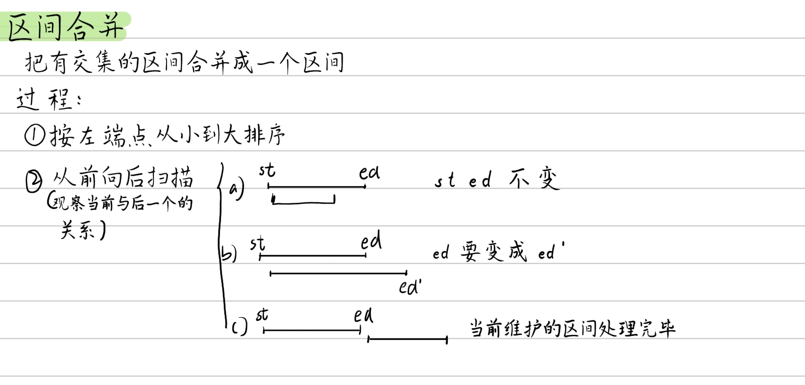

课程
y总模板
常用代码模板2——数据结构
常用代码模板3——搜索与图论
小技巧
快速去重
1 2 3 4 5 6 先进行升序排序 auto last = std::unique (vec.begin (), vec.end ()); vec.erase (last, vec.end ());
读入技巧
1 2 3 getline (cin,line);sscanf (line.c_str (),"%d:%d:%d %d:%d:%d (+%d)" ,&hh1,&mm1,&ss1,&hh2,&mm2,&ss2,&dd);
1 2 3 4 5 6 7 8 9 #include <string> #include <sstream> getline (cin,str);while (cnt--){ getline (cin,str); stringstream ssin (str) ; while (ssin>>a[n]) n++; }
排序
快速排序
1 2 3 4 5 6 7 8 9 10 11 12 13 14 15 16 17 18 19 void quick_sort (int q[], int l, int r) if (l >= r) return ; int i = l - 1 , j = r + 1 , x = q[l + r >> 1 ]; while (i < j) { do i ++ ; while (q[i] < x); do j -- ; while (q[j] > x); if (i < j) swap (q[i], q[j]); } quick_sort (q, l, j), quick_sort (q, j + 1 , r); } 作者：yxc 链接：https: 来源：AcWing 著作权归作者所有。商业转载请联系作者获得授权，非商业转载请注明出处。
归并排序
1 2 3 4 5 6 7 8 9 10 11 12 13 14 15 16 17 18 19 20 21 22 23 void merge_sort (int q[], int l, int r) if (l >= r) return ; int mid = l + r >> 1 ; merge_sort (q, l, mid); merge_sort (q, mid + 1 , r); int k = 0 , i = l, j = mid + 1 ; while (i <= mid && j <= r) if (q[i] <= q[j]) tmp[k ++ ] = q[i ++ ]; else tmp[k ++ ] = q[j ++ ]; while (i <= mid) tmp[k ++ ] = q[i ++ ]; while (j <= r) tmp[k ++ ] = q[j ++ ]; for (i = l, j = 0 ; i <= r; i ++, j ++ ) q[i] = tmp[j]; } 作者：yxc 链接：https: 来源：AcWing 著作权归作者所有。商业转载请联系作者获得授权，非商业转载请注明出处。
二分
有单调性一定可以二分，没有单调性也可能可以二分
整数二分
image-20240808190812596
1 2 3 4 5 6 7 8 9 10 11 12 13 14 15 16 17 18 19 20 21 22 23 24 25 26 27 28 29 30 bool check (int x) int bsearch_1 (int l, int r) while (l < r) { int mid = l + r >> 1 ; if (check (mid)) r = mid; else l = mid + 1 ; } return l; } int bsearch_2 (int l, int r) while (l < r) { int mid = l + r + 1 >> 1 ; if (check (mid)) l = mid; else r = mid - 1 ; } return l; } 作者：yxc 链接：https: 来源：AcWing 著作权归作者所有。商业转载请联系作者获得授权，非商业转载请注明出处。
浮点数二分
控制精度来控制循环，精度要比题目所要求的多2（y总经验）
1 2 3 4 5 6 7 8 9 10 11 12 13 bool check (double x) double bsearch_3 (double l, double r) const double eps = 1e-6 ; while (r - l > eps) { double mid = (l + r) / 2 ; if (check (mid)) r = mid; else l = mid; } return l; }
高精度
算法_202408092113_02094 2
算法_202408092113_03934 3
加法
1 2 3 4 5 6 7 8 9 10 11 12 13 14 15 16 17 18 19 20 21 22 23 vector<int > add (vector<int > &A, vector<int > &B) if (A.size () < B.size ()) return add (B, A); vector<int > C; int t = 0 ; for (int i = 0 ; i < A.size (); i ++ ) { t += A[i]; if (i < B.size ()) t += B[i]; C.push_back (t % 10 ); t /= 10 ; } if (t) C.push_back (t); return C; } 作者：yxc 链接：https: 来源：AcWing 著作权归作者所有。商业转载请联系作者获得授权，非商业转载请注明出处。
减法
1 2 3 4 5 6 7 8 9 10 11 12 13 14 15 16 17 18 19 20 21 vector<int > sub (vector<int > &A, vector<int > &B) vector<int > C; for (int i = 0 , t = 0 ; i < A.size (); i ++ ) { t = A[i] - t; if (i < B.size ()) t -= B[i]; C.push_back ((t + 10 ) % 10 ); if (t < 0 ) t = 1 ; else t = 0 ; } while (C.size () > 1 && C.back () == 0 ) C.pop_back (); return C; } 作者：yxc 链接：https: 来源：AcWing 著作权归作者所有。商业转载请联系作者获得授权，非商业转载请注明出处。
乘法
**高精度*低精度**
1 2 3 4 5 6 7 8 9 10 11 12 13 14 15 16 17 18 19 20 21 22 vector<int > mul (vector<int > &A, int b) vector<int > C; int t = 0 ; for (int i = 0 ; i < A.size () || t; i ++ ) { if (i < A.size ()) t += A[i] * b; C.push_back (t % 10 ); t /= 10 ; } while (C.size () > 1 && C.back () == 0 ) C.pop_back (); return C; } 作者：yxc 链接：https: 来源：AcWing 著作权归作者所有。商业转载请联系作者获得授权，非商业转载请注明出处。
除法
高精度除以低精度
1 2 3 4 5 6 7 8 9 10 11 12 13 14 15 16 17 18 19 20 vector<int > div (vector<int > &A, int b, int &r) vector<int > C; r = 0 ; for (int i = A.size () - 1 ; i >= 0 ; i -- ) { r = r * 10 + A[i]; C.push_back (r / b); r %= b; } reverse (C.begin (), C.end ()); while (C.size () > 1 && C.back () == 0 ) C.pop_back (); return C; } 作者：yxc 链接：https: 来源：AcWing 著作权归作者所有。商业转载请联系作者获得授权，非商业转载请注明出处。
前缀和与差分
image-20241114212056491
image-20241114212111998
前缀和
一维前缀和
1 2 3 4 5 6 7 8 9 10 11 12 13 14 15 16 17 18 19 20 21 22 23 24 25 26 27 28 29 30 #include <iostream> using namespace std;const int N = 100010 ;int n, m;int a[N], s[N];int main () scanf ("%d%d" , &n, &m); for (int i = 1 ; i <= n; i ++ ) scanf ("%d" , &a[i]); for (int i = 1 ; i <= n; i ++ ) s[i] = s[i - 1 ] + a[i]; while (m -- ) { int l, r; scanf ("%d%d" , &l, &r); printf ("%d\n" , s[r] - s[l - 1 ]); } return 0 ; } 作者：yxc 链接：https: 来源：AcWing 著作权归作者所有。商业转载请联系作者获得授权，非商业转载请注明出处。
子矩阵的和
1 2 3 4 5 6 7 8 9 10 11 12 13 14 15 16 17 18 19 20 21 22 23 24 25 26 27 28 29 30 31 32 33 34 35 #include <iostream> using namespace std;const int N = 1010 ;int n, m, q;int s[N][N];int main () scanf ("%d%d%d" , &n, &m, &q); for (int i = 1 ; i <= n; i ++ ) for (int j = 1 ; j <= m; j ++ ) scanf ("%d" , &s[i][j]); for (int i = 1 ; i <= n; i ++ ) for (int j = 1 ; j <= m; j ++ ) s[i][j] += s[i - 1 ][j] + s[i][j - 1 ] - s[i - 1 ][j - 1 ]; while (q -- ) { int x1, y1, x2, y2; scanf ("%d%d%d%d" , &x1, &y1, &x2, &y2); printf ("%d\n" , s[x2][y2] - s[x1 - 1 ][y2] - s[x2][y1 - 1 ] + s[x1 - 1 ][y1 - 1 ]); } return 0 ; } 作者：yxc 链接：https: 来源：AcWing 著作权归作者所有。商业转载请联系作者获得授权，非商业转载请注明出处。
差分
一维差分
1 2 3 4 5 6 7 8 9 10 11 12 13 14 15 16 17 18 19 20 21 22 23 24 25 26 27 28 29 30 31 32 33 34 35 36 37 38 39 40 #include <iostream> using namespace std;const int N = 100010 ;int n, m;int a[N], b[N];void insert (int l, int r, int c) b[l] += c; b[r + 1 ] -= c; } int main () scanf ("%d%d" , &n, &m); for (int i = 1 ; i <= n; i ++ ) scanf ("%d" , &a[i]); for (int i = 1 ; i <= n; i ++ ) insert (i, i, a[i]); while (m -- ) { int l, r, c; scanf ("%d%d%d" , &l, &r, &c); insert (l, r, c); } for (int i = 1 ; i <= n; i ++ ) b[i] += b[i - 1 ]; for (int i = 1 ; i <= n; i ++ ) printf ("%d " , b[i]); return 0 ; } 作者：yxc 链接：https: 来源：AcWing 著作权归作者所有。商业转载请联系作者获得授权，非商业转载请注明出处。
差分矩阵
1 2 3 4 5 6 7 8 9 10 11 12 13 14 15 16 17 18 19 20 21 22 23 24 25 26 27 28 29 30 31 32 33 34 35 36 37 38 39 40 41 42 43 44 45 46 47 48 49 50 51 52 53 #include <iostream> using namespace std;const int N = 1010 ;int n, m, q;int a[N][N], b[N][N];void insert (int x1, int y1, int x2, int y2, int c) b[x1][y1] += c; b[x2 + 1 ][y1] -= c; b[x1][y2 + 1 ] -= c; b[x2 + 1 ][y2 + 1 ] += c; } int main () scanf ("%d%d%d" , &n, &m, &q); for (int i = 1 ; i <= n; i ++ ) for (int j = 1 ; j <= m; j ++ ) scanf ("%d" , &a[i][j]); for (int i = 1 ; i <= n; i ++ ) for (int j = 1 ; j <= m; j ++ ) insert (i, j, i, j, a[i][j]); while (q -- ) { int x1, y1, x2, y2, c; cin >> x1 >> y1 >> x2 >> y2 >> c; insert (x1, y1, x2, y2, c); } for (int i = 1 ; i <= n; i ++ ) for (int j = 1 ; j <= m; j ++ ) b[i][j] += b[i - 1 ][j] + b[i][j - 1 ] - b[i - 1 ][j - 1 ]; for (int i = 1 ; i <= n; i ++ ) { for (int j = 1 ; j <= m; j ++ ) printf ("%d " , b[i][j]); puts ("" ); } return 0 ; } 作者：yxc 链接：https: 来源：AcWing 著作权归作者所有。商业转载请联系作者获得授权，非商业转载请注明出处。
双指针
image-20241117225214841
1 2 3 4 5 6 7 8 9 for (int i = 0 , j = 0 ; i < n; i ++ ){ while (j < i && check (i, j)) j ++ ; } 常见问题分类： (1 ) 对于一个序列，用两个指针维护一段区间 (2 ) 对于两个序列，维护某种次序，比如归并排序中合并两个有序序列的操作
位运算
基础操作
image-20241117225306326
1 2 3 4 n >> k & 1 lowbit (n) = n & -n
快速幂
image-20241001204959516
1 2 3 4 5 6 7 8 9 10 ll quick_power (ll n, ll p) { ll res = 1 ; while (p){ if (p & 1 ) res *= n; n *= n; p >>= 1 ; } return res; }
延申
64位整数乘法
1 2 3 4 5 6 7 8 9 10 11 12 13 14 15 16 17 18 #include <iostream> using namespace std;typedef unsigned long long ULL;int main () ULL a, b, p; cin >> a >> b >> p; ULL res = 0 ; while (a) { if (a & 1 ) res = (res + b) % p; b = (b + b) % p; a >>= 1 ; } cout << res << endl; return 0 ; }
离散化
image-20241117225439611
1 2 3 4 5 6 7 8 9 10 11 12 13 14 15 16 17 18 19 20 21 vector<int > alls; sort (alls.begin (), alls.end ()); alls.erase (unique (alls.begin (), alls.end ()), alls.end ()); int find (int x) int l = 0 , r = alls.size () - 1 ; while (l < r) { int mid = l + r >> 1 ; if (alls[mid] >= x) r = mid; else l = mid + 1 ; } return r + 1 ; } 作者：yxc 链接：https: 来源：AcWing 著作权归作者所有。商业转载请联系作者获得授权，非商业转载请注明出处。
区间合并
image-20241117225456596
1 2 3 4 5 6 7 8 9 10 11 12 13 14 15 16 17 18 19 20 21 22 23 24 void merge (vector<PII> &segs) vector<PII> res; sort (segs.begin (), segs.end ()); int st = -2e9 , ed = -2e9 ; for (auto seg : segs) if (ed < seg.first) { if (st != -2e9 ) res.push_back ({st, ed}); st = seg.first, ed = seg.second; } else ed = max (ed, seg.second); if (st != -2e9 ) res.push_back ({st, ed}); segs = res; } 作者：yxc 链接：https: 来源：AcWing 著作权归作者所有。商业转载请联系作者获得授权，非商业转载请注明出处。
数学
高斯消元
应用
883.高斯消元解线性方程组
质因数分解
OI-wiki 分解质因数
867.分解质因数
1 2 3 4 5 6 7 8 9 10 11 12 13 14 15 16 17 18 19 20 vector<pair<int ,int > > div (int x) { vector<pair<int ,int > > res; for (int i=2 ;i*i<=x;i++) { if (x%i==0 ) { int times=0 ; while (x%i==0 ) { x/=i; times++; } res.push_back (make_pair (i,times)); } } if (x!=1 ) res.push_back (make_pair (x,1 )); return res; }
坐标旋转公式
\[
\left(
\begin{array}{c}
x^{'} \\ y^{'}
\end{array}
\right)
=
\left(
\begin{array}{c}
\cos\alpha&\sin\alpha \\ - \sin\alpha & \cos\alpha
\end{array}
\right)
\left(
\begin{array}{c}
x \\ y
\end{array}
\right)
\]
数据结构
链表
不采用结构体+指针的做法，因为效率低下，采用数组模拟
算法课程_202502181430_06788 11
算法课程_202502181430_08625 12
单链表
1 2 3 4 5 6 7 8 9 10 11 12 13 14 15 16 17 18 19 20 21 int head, e[N], ne[N], idx;void init () head = -1 ; idx = 0 ; } void insert (int a) e[idx] = a, ne[idx] = head, head = idx ++ ; } void remove () head = ne[head]; }
双链表
1 2 3 4 5 6 7 8 9 10 11 12 13 14 15 16 17 18 19 20 21 22 23 24 25 int e[N], l[N], r[N], idx;void init () r[0 ] = 1 , l[1 ] = 0 ; idx = 2 ; } void insert (int a, int x) e[idx] = x; l[idx] = a, r[idx] = r[a]; l[r[a]] = idx, r[a] = idx ++ ; } void remove (int a) l[r[a]] = l[a]; r[l[a]] = r[a]; }
栈与队列
02502181437_07407 13
1 2 3 4 5 6 7 8 9 10 11 12 13 14 15 16 17 int stk[N], tt = 0 ;stk[ ++ tt] = x; tt -- ; stk[tt]; if (tt > 0 ){ }
1 2 3 4 5 6 7 8 9 10 11 12 13 14 15 16 17 int q[N], hh = 0 , tt = -1 ;q[ ++ tt] = x; hh ++ ; q[hh]; if (hh <= tt){ }
单调栈
AcWing 830. 单调栈
算法课程_202502181437_07407 13
1 2 3 4 5 6 7 常见模型：找出每个数左边离它最近的比它大/小的数,栈中存储的是数组的下标 int tt = 0 ;for (int i = 1 ; i <= n; i ++ ){ while (tt && check (stk[tt], i)) tt -- ; stk[ ++ tt] = i; }
单调队列
力扣--无重复字符的最长子串
算法课程_202502181437_09401 14
1 2 3 4 5 6 7 8 常见模型：找出滑动窗口中的最大值/最小值 int hh = 0 , tt = -1 ;for (int i = 0 ; i < n; i ++ ){ while (hh <= tt && check_out (q[hh])) hh ++ ; while (hh <= tt && check (q[tt], i)) tt -- ; q[ ++ tt] = i; }
KMP
KMP字符串
1 2 3 4 5 6 7 8 9 10 11 12 13 14 15 16 17 18 19 20 求模式串的Next数组： for (int i = 2 , j = 0 ; i <= m; i ++ ){ while (j && p[i] != p[j + 1 ]) j = ne[j]; if (p[i] == p[j + 1 ]) j ++ ; ne[i] = j; } for (int i = 1 , j = 0 ; i <= n; i ++ ){ while (j && s[i] != p[j + 1 ]) j = ne[j]; if (s[i] == p[j + 1 ]) j ++ ; if (j == m) { j = ne[j]; } }
并查集
算法课程_202502181451_21985 17
1 2 3 4 5 6 7 8 9 10 11 12 13 14 15 16 17 18 19 20 21 22 23 24 25 26 27 28 29 30 31 32 33 34 35 36 37 38 39 40 41 42 43 44 45 46 47 48 49 50 51 52 53 54 55 56 57 58 59 60 61 62 63 64 65 66 67 68 69 (1 )朴素并查集： int p[N]; int find (int x) { if (p[x] != x) p[x] = find (p[x]); return p[x]; } for (int i = 1 ; i <= n; i ++ ) p[i] = i; p[find (a)] = find (b); (2 )维护size的并查集： int p[N], size[N]; int find (int x) { if (p[x] != x) p[x] = find (p[x]); return p[x]; } for (int i = 1 ; i <= n; i ++ ) { p[i] = i; size[i] = 1 ; } size[find (b)] += size[find (a)]; p[find (a)] = find (b); (3 )维护到祖宗节点距离的并查集： int p[N], d[N]; int find (int x) { if (p[x] != x) { int u = find (p[x]); d[x] += d[p[x]]; p[x] = u; } return p[x]; } for (int i = 1 ; i <= n; i ++ ) { p[i] = i; d[i] = 0 ; } p[find (a)] = find (b); d[find (a)] = distance;
Trie树
字典树
1 2 3 4 5 6 7 8 9 10 11 12 13 14 15 16 17 18 19 20 21 22 23 24 25 26 27 28 29 30 int son[N][26 ], cnt[N], idx;void insert (char *str) int p = 0 ; for (int i = 0 ; str[i]; i ++ ) { int u = str[i] - 'a' ; if (!son[p][u]) son[p][u] = ++ idx; p = son[p][u]; } cnt[p] ++ ; } int query (char *str) int p = 0 ; for (int i = 0 ; str[i]; i ++ ) { int u = str[i] - 'a' ; if (!son[p][u]) return 0 ; p = son[p][u]; } return cnt[p]; }
堆
算法课程_202502181451_23639 18
1 2 3 4 5 6 7 8 9 10 11 12 13 14 15 16 17 18 19 20 21 22 23 24 25 26 27 28 29 30 31 32 33 34 35 36 int h[N], ph[N], hp[N], size;void heap_swap (int a, int b) swap (ph[hp[a]],ph[hp[b]]); swap (hp[a], hp[b]); swap (h[a], h[b]); } void down (int u) int t = u; if (u * 2 <= size && h[u * 2 ] < h[t]) t = u * 2 ; if (u * 2 + 1 <= size && h[u * 2 + 1 ] < h[t]) t = u * 2 + 1 ; if (u != t) { heap_swap (u, t); down (t); } } void up (int u) while (u / 2 && h[u] < h[u / 2 ]) { heap_swap (u, u / 2 ); u >>= 1 ; } } for (int i = n / 2 ; i; i -- ) down (i);
哈希
一般哈希
1 2 3 4 5 6 7 8 9 10 11 12 13 14 15 16 17 18 19 20 21 22 23 24 25 26 27 28 29 30 31 32 33 34 35 36 37 (1 ) 拉链法 int h[N], e[N], ne[N], idx; void insert (int x) { int k = (x % N + N) % N; e[idx] = x; ne[idx] = h[k]; h[k] = idx ++ ; } bool find (int x) { int k = (x % N + N) % N; for (int i = h[k]; i != -1 ; i = ne[i]) if (e[i] == x) return true ; return false ; } (2 ) 开放寻址法 int h[N]; int find (int x) { int t = (x % N + N) % N; while (h[t] != null && h[t] != x) { t ++ ; if (t == N) t = 0 ; } return t; }
字符串哈希
核心思想 ：将字符串看成P进制数，P的经验值是131或13331，取这两个值的冲突概率低 小技巧 ：取模的数用2^64，这样直接用unsigned long long存储，溢出的结果就是取模的结果
1 2 3 4 5 6 7 8 9 10 11 12 13 14 15 16 typedef unsigned long long ULL;ULL h[N], p[N]; p[0 ] = 1 ; for (int i = 1 ; i <= n; i ++ ){ h[i] = h[i - 1 ] * P + str[i]; p[i] = p[i - 1 ] * P; } ULL get (int l, int r) return h[r] - h[l - 1 ] * p[r - l + 1 ]; }
搜索
DFS与BFS
宽搜用队列
深搜用栈
树和图
树是特殊的图
图的存储：
动态规划
用集合的思想思考动态规划问题,没有固定的代码模板,重在思想
背包问题
问题分类:
0-1背包
完全背包
多重背包
分组背包
线性DP
树状数组
在线,支持修改（前缀和不支持修改）,使用的时候下标要从1开始
用处
在O(logn)的时间内:
给指定位置上的数字加上一个数字(单点修改 )
求指定的前缀和(区间查询 )
可以通过转化例如利用差分转换为单点查询区间修改等。
对于树状数组,每个节点i的父节点是\(i+lowbit(i)\)
计算
\(tr[x]=\sum_{x-lowbit(x)+1}^{x}{a[i]}\)
\(lowbit(x)=x\&(-x)\)
基本操作
1 2 3 4 5 6 7 8 9 10 11 12 13 14 int lowbit (int x) return x& -x; } void add (int x,int v) for (int i=x;i<=n;i+=lowbit (i)) tr[i]+=v; } int query (int x) int res=0 ; for (int i=x;i>0 ;i-=lowbit (i))res+=tr[i]; return res; }
线段树
线段树的使用范围比树状数组大很多,树状数组类似于手术刀,线段树类似于大砍刀。
1 2 3 4 5 struct Node { int l,r; int sum; }tr[4 *N];
节点个数一般开4N,存储方式使用一维数组,类似于堆的存储,可以通过下标找到父节点和孩子节点。 ### 操作
在O(logn) 时间内完成:
单点修改
区间查询
1 2 3 4 5 6 7 8 9 10 11 12 13 14 15 16 17 18 19 20 21 22 23 24 25 26 27 28 29 30 31 32 33 34 35 void pushup (int u) tr[u].sum=tr[u*2 ].sum+tr[u*2 +1 ].sum; } void build (int u,int l,int r) if (l==r) tr[u]={l,r,w[l]}; else { int mid = (l+r)/2 ; tr[u]={l,r}; build (u*2 ,l,mid),build (u*2 +1 ,mid+1 ,r); pushup (u); } } void modify (int u,int x,int v) if (tr[u].l==tr[u].r) tr[u].sum+=v; else { int mid = tr[u].l+tr[u].r>>1 ; if (x<=mid)modify (u*2 ,x,v); else modify (u*2 +1 ,x,v); pushup (u); } } int query (int u,int l,int r) if (tr[u].l>=l&&tr[u].r<=r) return tr[u].sum; int mid = tr[u].l+tr[u].r>>1 ; int sum=0 ; if (l<=mid) sum=query (u*2 ,l,r); if (r>=mid+1 ) sum+=query (u*2 +1 ,l,r); return sum; }
也可以进行区间修改和区间查询,会加上懒标记。(较为复杂)